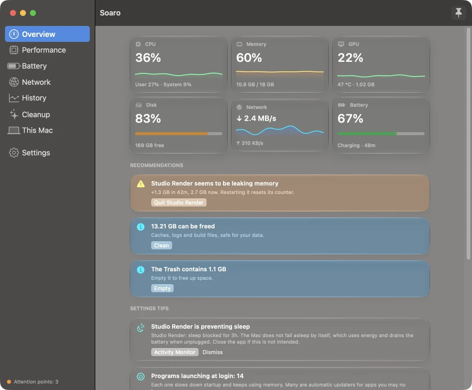
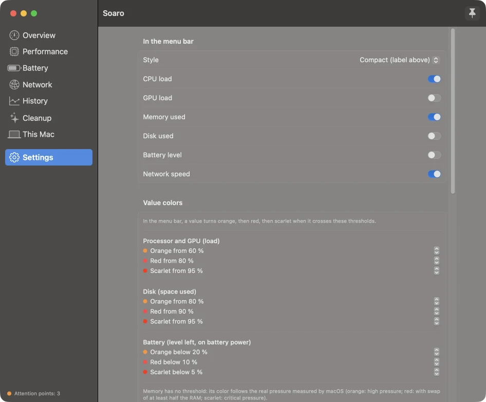
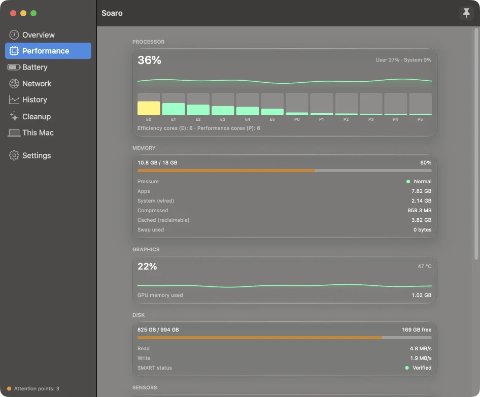
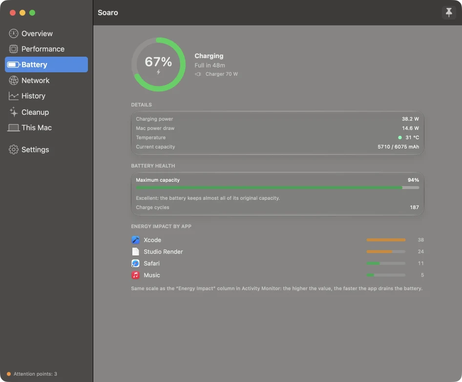
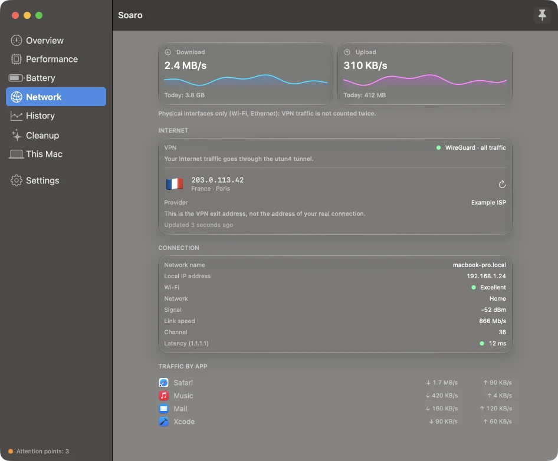
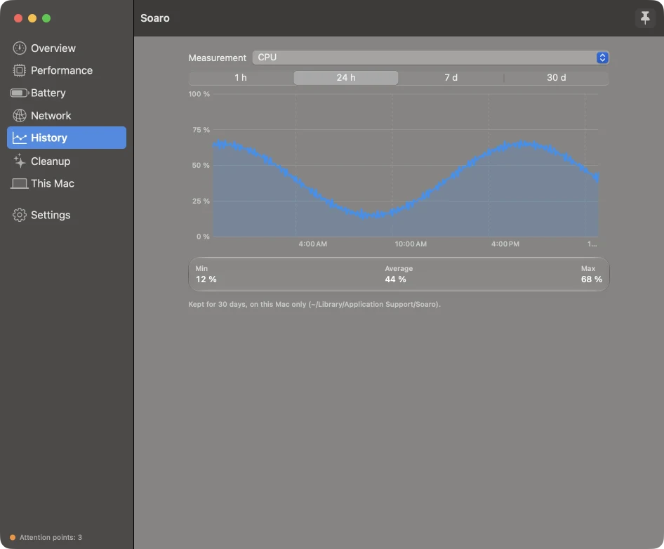
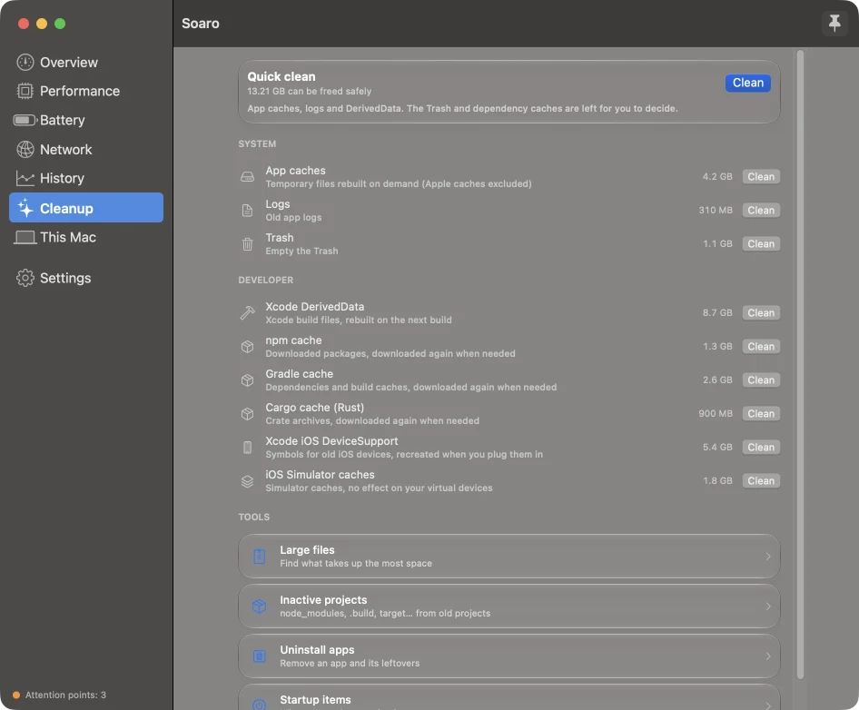
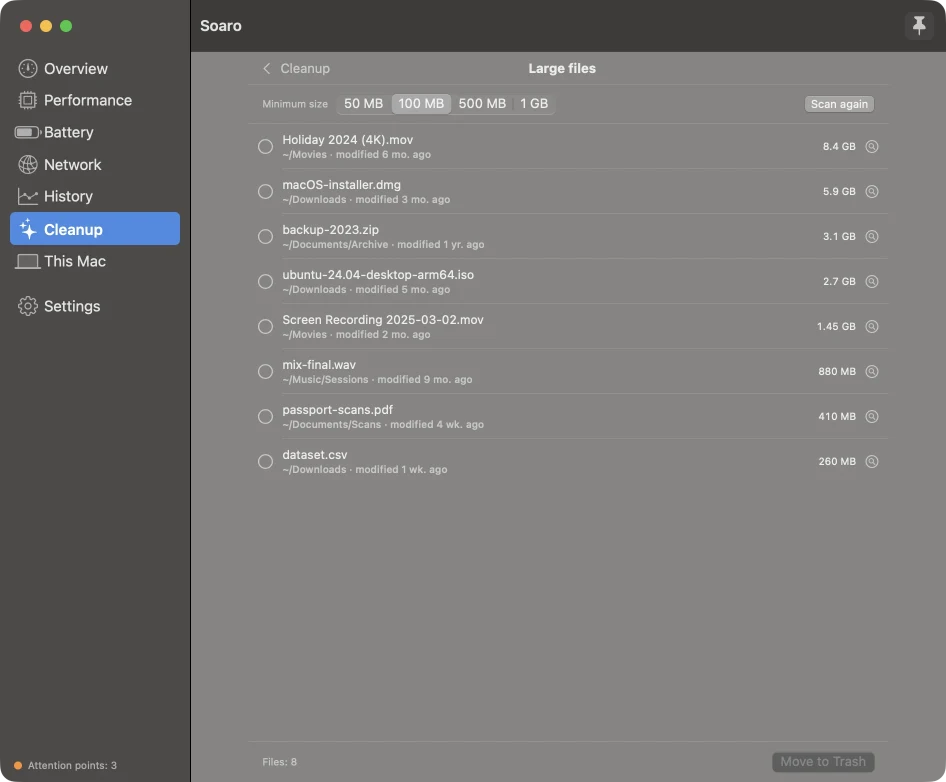
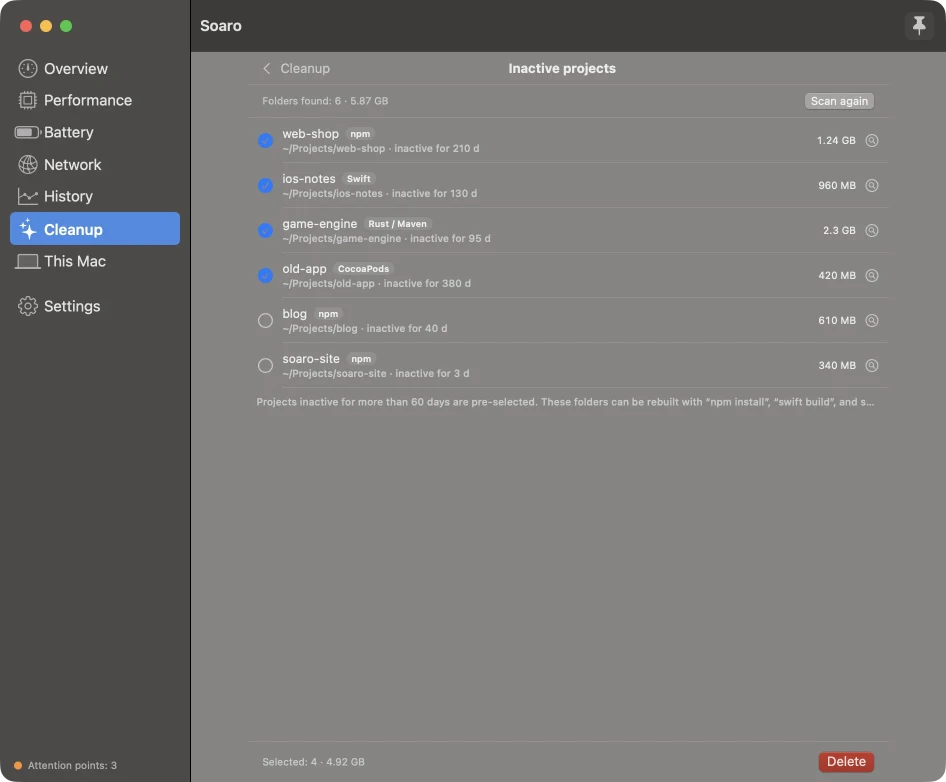
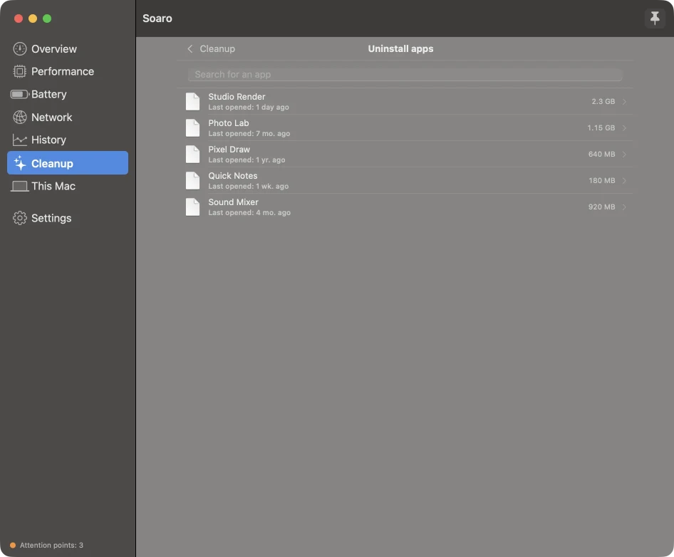

In the menu bar
Choose what you want to see, next to the clock.
- A value turns orange, red, then scarlet as it gets worse
- You choose the thresholds
- Hover over the icon to see why something is colored
Soaro lives in your menu bar. It watches CPU, GPU, memory, disk, network and battery, and tells you what to do when something goes wrong.

Open the panel from the menu bar for a quick look, or keep the full window on your desktop. Everything is measured on your Mac, in real time.
Choose what you want to see, next to the clock.

The details that Activity Monitor hides in several windows.

Is your battery still good? Which app drains it?

Speed, volume, and who is using your connection.

Something was slow last night? Look at the last hour, day, week or month. The history stays on your Mac, for 30 days.

Four tools, made for people who build things.
node_modules, .build, target, Pods



Soaro warns you about a full disk, memory under pressure, a probable memory leak, a hot Mac or a worn battery. It only sends a notification when the problem is critical.
Soaro reads a few macOS settings and tells you what could help: Low Power Mode, an app that blocks sleep, too many login items, storage, updates, backup.
Soaro never changes a setting. The button opens the right pane in System Settings, and you decide.
About 20-35 MB of memory and 1-2% of one CPU core when idle. When the panel is closed, the interface costs nothing.
Soaro runs on your Mac and keeps your data there.
~/Library/Application Support/SoaroOnce a day, Soaro downloads a small public file to know if a new version exists. It sends no personal data. You can turn it off.
This website counts visits with Umami, an open source tool. It sets no cookie, does not follow you from site to site, and respects the "Do Not Track" setting. The app sends nothing of this kind.
build or dist folder is never suggested.I prefer to be clear about what Soaro cannot do.
Soaro is signed with a Developer ID and notarized by Apple. It updates itself.
.dmg file.Soaro is free and open source. If it saves you time, you can support it. It is optional, and it helps me keep working on it.
Buy me a coffee